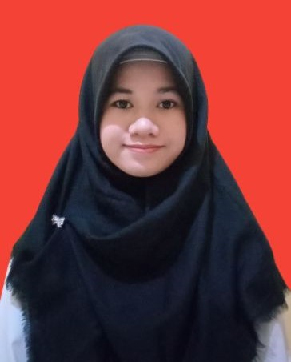

Salmia Rahmawati

Summary
Bachelor of Information Technology with internship experience in company administration, ERP-based application
development and maintenance, as well as system testing and documentation. Skilled in bug/error fixing, feature
enhancements, and manual book creation. Strong problem-solving skills, high attention to detail, and the ability to
work independently or in a team with a results-oriented mindset and a strong eagerness to learn.
Education
Bachelor of Informatics Engineering, Information Technology - Bina Sarana Informatika University (2019-2023)
Work Experience
-
Programmer Analyst (Intern) - PT Gema Cendekia Gemilang
Januari 2025 - Maret 2025
- Contributed to the maintenance and development of the business management application by fixing bugs/errors and enhancing
features to meet user needs.
- Conducted testing on school application to identify bugs/errors and prepared a manual book as a user guide.
-
IT Administration (Intern) - PT Gema Cendekia Gemilang
October 2024 - January 2025
-
Supported the company's administrative tasks and managed important documents to ensure accessibility and security.
-
Coordinated with clients for invoice collection.
-
Learned application development and analyzed the HRIS (Human Resource Information System) developed by the company using ERPNext.
-
Created UML (Unified Modeling Language) diagrams to support structured application development.
-
Developed a manual book as a guide for the application.
-
IT Developer (Intern) - PT Informasi Teknologi Indonesia (Jatis Mobile)
September 2022 - November 2022
-
Slicing Figma into HTML code using the Bootstrap Framework on the Main and Profile Pages of the website to ensure a responsive interface.
-
Contributed to the development of Import and Export file features on the Main and Profile Pages of the website using PHP language to improve the efficiency of data management.
Skills
- Software & Tools: ⭐️⭐️⭐️⭐️
- System & Data Management: ⭐️⭐️⭐️
- Web Development & Scripting: ⭐️⭐️⭐️
- Technical Writing & Documentation: ⭐️⭐️⭐️⭐️
Certifications and Training
- Project-Based Internship Certificate of Competency - BTPN Syariah and Rakamin Academy (2024)
- Certificate in Training on Scalable Web Service with Golang – Pusbang Proserti (2024)
- Certificate of Competence Software Development – Badan Nasional Sertifikasi Profesi (BNSP) (2024)
Other